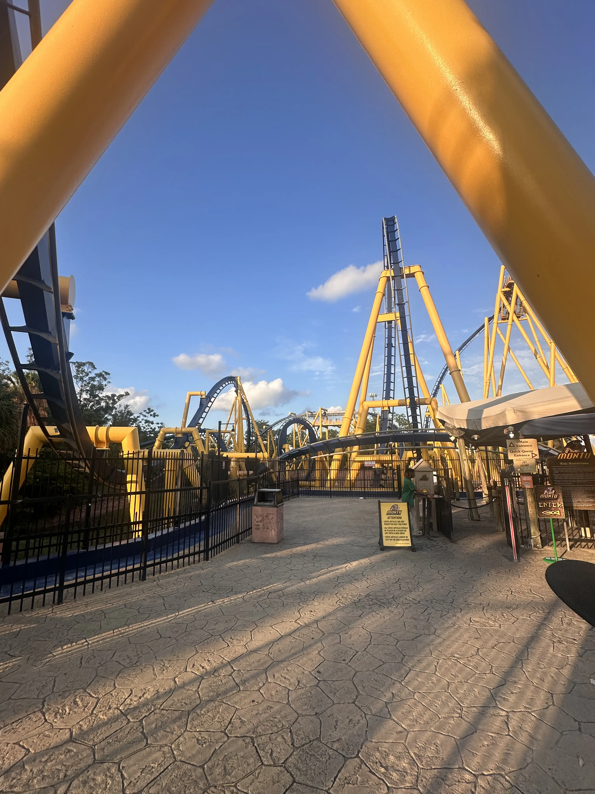
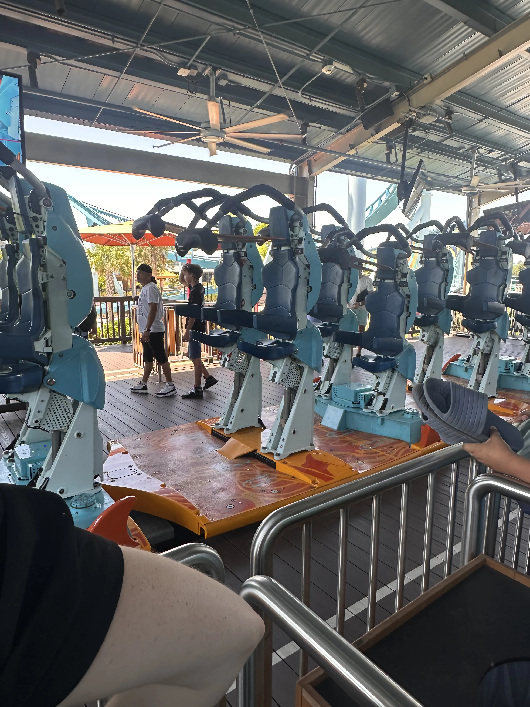
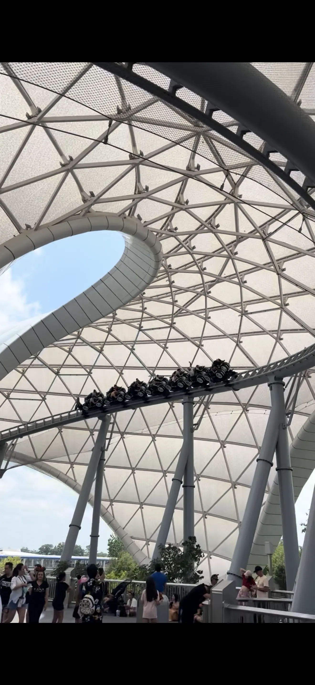

Montu's crazy layout

Pipeline! Only surf coaster in the world!

Tron at Disney World Magic Kingdom!
Ten tallest rollercosters
Some of my best memberies were with awesome roller coasters. My first big coaster was wicked at Lagoon and that's when they just fell in love. I had similar moments on talk to an Iron Gwazi where i'll just remember them forever because of how much fun I had and how much they suprised me. I also get excited about innovation in the rollercoaster space. Take pipeline, at SeaWorld Orlando. This coaster is a next generation stand-up that is just a blast. It offers some of the most unique airtime I've ever experienced. There's nothing else like it in the world and for a prototype, or first of its kind it is absolutely mind blowing. I look forward to going on a lot more and broadening my horizons because there's still much more that I need to experience, but I don't see my love for them stopping ant time soon.
Feel inspired to go on some? Click blow to get a random suggestion on where to go!